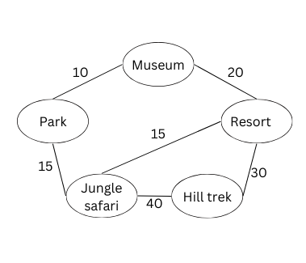

TOURISM SECTOR
Optimizing Tourist Routes Using Shortest Path Algorithms
Context:
Tourists visiting a city often face challenges in efficiently navigating between multiple destinations due to limited time, budget, and transportation constraints. They require a system to identify the most optimal route that minimizes travel distance or time while ensuring they can visit as many attractions as possible within their constraints.Problem Statement:
Given the list of tourist destinations within the city along with route distances and a sources destination. We need to find the shortest path between destinations or to find the nearest tourist destination.Possible solution:
Here we can use graph algorithms in order to find the shortest path. There are several graph algorithms1) Bellman ford Algorithm: Generally bellman-ford algorithm is used when there is a negative cycle within the graph and has time complexity of O(n^2). But in this case there are no negative cycles, therefore we are not using bellman-ford algorithm.
2)Floyd Algorithm: This algorithm is used when we need to find the shortest distance between each and every node/destination and has a time complexity of O(n^3). But in our case we need to find shortest path only from source node. Therefore we are not using Floyd algorithm.
3)Dijkstra's Algorithm: This algorithm is used to used to find shortest distance between one souce to all destinations and has time complexity of O(n*log n) and is suitable for our case. Therefore we use Dijkstra's Algorithm.
Example
Graph Representation:

Input to the Program:
Starting Point: 0(Museum)
Output of the Progrem:
Shortest path from Museum:
Distance to Museum: 0 km
Distance to Park: 10 km
Distance to Resort: 20 km
Distance to Hill Trek: 50 km
Distance to Jungle Safari: 25 km
Code Implementation
CLICK HEREFor more info
CLICK HEREINDUSTRIAL FIRM
Employee Skill Allocation in an Industrial Firm
Context:
In an industrial firm, efficient management of employee skills and allocation is crucial to maintain productivity. A proper skill allocation strategy is required to maximize the efficiency of the workforce.Problem Statement:
The firm needs to sort employees by their skill proficiency or years of experience so that each department is staffed with the right individuals for the specific tasks. The company wants to ensure that the employees with higher proficiency or experience are prioritized for more complex tasksPossible solution: Selection Sort
This algorithm iteratively selects the smallest (or largest) element and places it in the correct position, making it another viable choice when simplicity and small input size are considered. It works by selecting the smallest (or largest) item from the unsorted portion and swapping it with the first unsorted item.Example
Input to the Program:
Employees: (ID, Experience)
{101, 5}, {102, 2}, {103, 8}, {104, 3}, {105, 6}
Output of the Progrem:
Employees sorted by experience (descending):
ID: 103, Experience: 8 years
ID: 105, Experience: 6 years
ID: 101, Experience: 5 years
ID: 104, Experience: 3 years
ID: 102, Experience: 2 years
Code Implementation
CLICK HEREFor more info
CLICK HEREBack